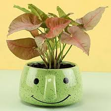
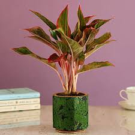
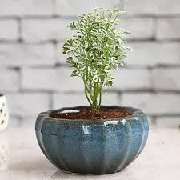

indoor plants

Description
Product Details:
- Plant Name- Pink Syngonium Plant
- Plant Placement- Indoors and Outdoors both
-
Plant Type- Airpurifying Foliage
- Plant Height- Upto 5 inches
- Stone Finish Table Top Metal Pot
- Pot Dimensions- 4.5 x 3.5 inches
Syngonium Plants Trivia:
- Origin- This plant is native to South America
- It is also known as the Arrow Head Plant owing to its interesting arrow shaped leaves. It is believed that this plant helps in reducing stress, anxiety, and sleep disorders.
750 ₹
buy

Description
Product Details:
- Plant Name- Pink Aglaonema Plant
- Plant Type- Airpurifying Foliage
- Plant Placement- Indoors and Outdoors both
- Plant Height- Upto 8 inches
- Stone Finish Table Top Metal Pot
- Pot Dimensions- 4.5 x 3.5 inches
Aglaonema Plants Trivia:
- Origin- Aglaonema is a genus of flowering plants in the arum family, Araceae that is native to tropical and subtropical regions of Asia and New Guinea.
- During summer once the plant matures in growth and age it can produce very small flowers which then turn into berries. If these do appear they grow between the leaves and are quite insignificant.
650 ₹
buy

Description
Product Details:
- Plant Name-Aeralia
- Plant Type- Foliage & Air Purifying
- Plant Placement- Indoors & Outdoors
- Plant Height- 6 x 3.5 inches
- Blue Ceramic Round Dish Planter- 3.5 inches
Aeralia Plants Trivia:
- Aeralia or Aralia is a versatile indoor ornamental plant that includes approximately six species, all valued for their luxurious foliage.
- These plants require frequent watering however, the soil should dry out between waterings, as the plant won’t tolerate soggy soil.
450 ₹
buy